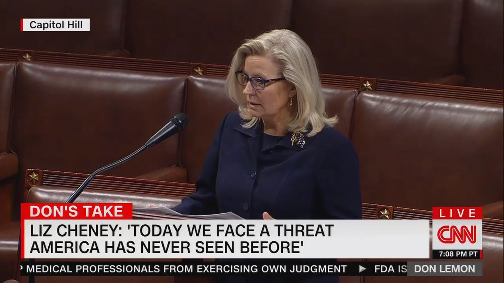

Liz Cheney's game plan
As she faces a vote to be thrown out of House Republican leadership, Rep.Liz Cheney has told associates she doesn’t plan on going anywhere — and plans to run for re-election.
What to watch: In the meantime, as she sees it, she will aggressively pursue a fight for the soul of the Republican Party, after an expected vote to strip her of her role as GOP conference chair, the party's No.3 House post.
Cheney, who today faces a 9 a.m. confrontation with the conference she chairs, views Trumpism in general — and election denial specifically — as an ongoing threat to democracy.
Last night, at 8:06 p.m., Cheney — the highest-ranking Republican woman in Congress — said so on the House floor.
Axios is told Cheney will take her case to the public with speeches and other appearances.Cheney and her team has been intentional about painting the stakes as higher than a squabble about a leadership job, but instead about truth and the future of the Republican Party.
With House Republicans on the brink of replacing Cheney with Rep.Elise Stefanik of New York, watch for House Minority Leader Kevin McCarthy to argue that a conference with unified leaders can now turn to fighting President Biden and Speaker Pelosi.
Reality check: Cheney has her work cut out for her.Polling shows it's still Trump’s party — and it’s not a close call.
Posted On: 2021-05-12T00:00:00
Posted By: Jonathan Swan

Content Date: 2021-05-12
Download Date: 2021-05-15
Document ID: L0C04CB0U